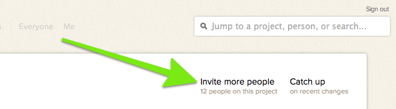
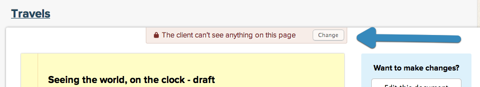

When you're working with a client, you don't necessarily want them to see all the work you do behind the scenes. Basecamp lets you create a client side to your project, to keep things off limits.
You can enable the client project when you start a project. You don't have to add clients just yet - Basecamp lets you plan ahead! You can restrict items as you create them, and when you add clients to the project, those items will be hidden away. You can set up client projects in templates too!
You can also enable client projects by clicking Invite more people...

... and then clicking to the client tab.
Need to move someone from your team to a client team? Click Everyone, then the person's ID, and then "Superpowers and access to projects." You'll be able to switch them to a client team, and vice versa.
Restricting items from the client
When client projects are enabled, you'll see a check box that lets you restrict permissions.
Update permissions on existing items on the"Edit" screen.
Basecamp lets you know which items are hidden from the client.
Want to share an item with your client? Click the Change button to remove the permission setting. Anyone who can see an item can change the permission setting.

Things to keep in mind:
Comments inherit the permission setting of their parent item. If your clients can't see the original message, they can't see the rest of the discussion either.
Forwarded emails cannot be made private.
You can restrict an entire to-do list, but not an individual task.
When you move or copy an item, the permission setting will be retained.
The client can't keep anything hidden from you.
When a client adds someone to the project, that person will automatically be a client as well.